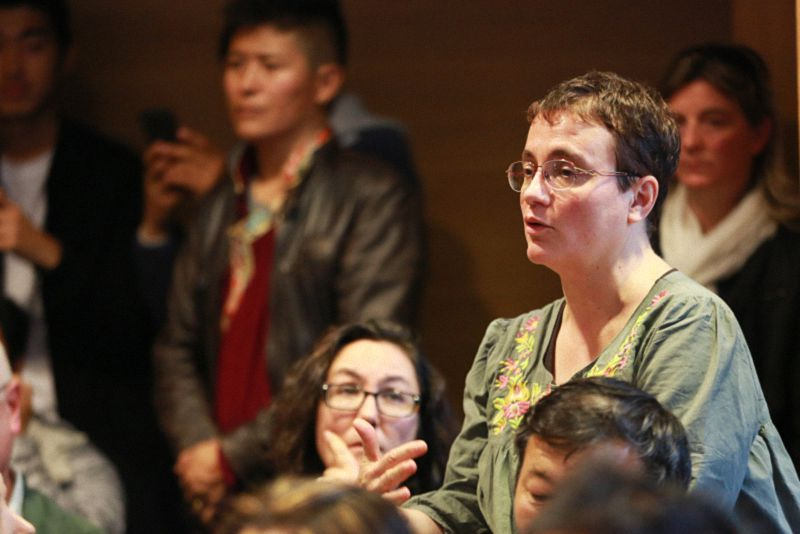

法国巴黎喜马拉雅研究中心问答
『2015年10月7日』

（一）问：喇荣五明佛学院有没有专门针对女性的课程，收到了怎样的成效？比如女居士的学习能力有所提高，或者有助于她们实现自我价值之类。
答：佛学院并不是女众道场，也没有着力扩大出家人的规模，所以没有专门针对女性的课程，也谈不上什么成效。但佛学院的主要方针是“清净戒律、闻思修行、团结和合”，因此对常住人员的戒律、学习、人格等方面都有一定要求。
如果要说对人们的利益，佛学院的堪布会经常前往藏地各个寺院、民众区传讲佛法，也传授藏文化、藏语言，以及卫生、环保、护生等很多方面的世间知识。他们每到一处，都会要求当地人重视学习，我想通过这种方式，应该能令很多人受益。
学习总是好事，世间的任何学校也是如此，教育和学习不会让人们损失什么，即使出现一些危害，也只是个别人的行为和因缘。
（二）问：今天的主题是关于女性权益，其实亚洲有很多比较落后的国家，女性地位特别低。从我们藏地来看，卫藏稍微好一些，康巴和安多就不行，无论在家庭还是社会上，做文职还是体力劳动，女性想有一番作为都比较困难。对于改善女性地位，您有什么方法和建议？
答：我的看法是，女性地位问题并不只是针对藏族，从世界范围来看，这一状况都需要不断改善。实际上，相对一些其他民族和地区，藏族的女性权益并不算特别落后，在很多领域，女性的能力和权利已经超越男性。
至于未来要怎样改善女性权利，需要观待全球的发展趋势，也需要不断学习、借鉴。
其实，能力上要求男女完全平等，这在世界任何地方都不容易。比如目前各国政府的领导层中，百分之七八十是男性，女性占有的席位非常少；而家庭中，女性又往往承担了大部分家务。这些状况短时间内很难改变。
但有一些不平等现象，比如男性雇佣女性当佣人等，是各个民族都需要改变的。改变的最主要方法，就是教育和学习。
（三）问：佛教非常深奥，像我这样的人想要完全了解还是有点困难。但我听说密宗中需要依靠女性来修行，为什么这么说，它的核心又是什么？
答：密宗当中是有这样的说法，依靠女性修行，但如果双方有自相的男女贪欲，是不可能获得成就的。《桑布扎续》中说：“以贪离贪等，离贪欲即解脱。”意思是，如果能认识贪欲的本体，了知它是空性、不存在的法，贪欲就能转为五智里的妙观察智。一旦证得烦恼的本性即是智慧，接触女人也好、喝酒吃肉也好，做什么都不会再被烦恼束缚；反之，只是以庸俗的心态，想用密宗的这种方式获得成就，绝不可能。
所以必须达到一定境界，才能依靠女性修行。这种境界在《大幻化网》等很多密法中有所宣说，从女性和瑜伽士的角度，都进行了详细说明。
（四）问：得知佛学院对女性与男性有同样的学习安排，我从心底感到高兴，今天在藏传佛教里出家的女性很多，您对女性出家怎么看？比丘尼戒能在藏地恢复吗？
答：恢复比丘尼戒并不容易。以前哈佛大学的曲尼降措跟我说过，佛学院应该恢复比丘尼戒，这是一件非常好的事。但我觉得难度很大。在藏传佛教历史上，这件事已经拖了很久，今天想改变也同样艰难。
就喇荣五明佛学院而言，法王如意宝在世的时候，对这个问题并没有明确讲过；现在有些堪布对此很有意乐，正在做研究，写了很多论文，也开了几次会议，但进展并不顺利。
比丘尼戒的传承、仪轨很多，如果想在藏地恢复，需要从印度或汉地接过来。但各地的传承并不一致，比如汉地依大众部、藏地依一切有部、斯里兰卡依上座部，如果按照其他宗派的传承在藏地恢复比丘尼戒，就要对布萨、结夏安居等仪轨全部掌握和圆融，如果没有研究透，可能会困难重重。
印度、美国的很多藏传佛教学者和上师，则倾向于接受台湾的比丘尼戒传承，他们也开了很多次会议，但到现在还没有结果。大家都在努力中，不知道将来会怎样。
另外，出家戒不同于菩萨戒，根据所受的戒律传承，需要遵循不同的戒条，戒条的名称也有差别，所以复杂程度远远超过菩萨戒，这也增大了恢复比丘尼戒的难度。
现在佛学院也有很多汉地比丘尼，但还不具备传戒的条件。今年我们送了一百多位沙弥尼去汉地寺院受比丘尼戒，等这批比丘尼回来之后，希望从2017年开始，能在佛学院传汉地的比丘尼戒，有这方面的计划。甚至一些懂汉语的藏族觉姆，也跟着一起去受了比丘尼戒。
（五）问：我们在海外的藏族人经常听说，国内的佛教现在非常兴盛，兴盛的方式是怎样？学佛的人又有多少？请您介绍一下这方面的情况。
答：现在汉地学佛的人确实比较多，而且有很大一部分在学习藏传佛教，其中有知识分子，也有80、90后的年轻人。包括我去高校交流，很多老师、学生的问题都跟藏传佛教有关。我估计，可能跟这个时代网络学佛非常方便有关。
至于人数是多少，根据2009年政府宗教管理部门的统计，说汉地有一亿学佛人，但也有其他上师说，汉地有两三亿人学佛。具体数字不是特别清楚，各个城市中并没有专门统计，只能说现在跟过去确实不一样，知识分子和年轻人越来越多，是一个特点和趋势。
（六）问：在佛学院，女性能否进入更高层次的学习，比如高级瑜伽？因为这些修行方式，主要建立在男性的生理基础上，它是否也适合女性？有没有专为女性设置的修行课程？
答：佛学院总的来说，每年都有一个月闭关，比如今年的时间是藏历九月，这期间，男女众都要闭关修行。但目前还没有专门为女众设置的修行课程，以后怎样还不太确定。
其实法王如意宝在世的时候，讲过风脉明点的修法，佛学院的女众都会修。
（七）问：我对转世有一些疑问，如果一个人有虔诚的信仰，乐于助人，却还要遭受病痛、灾难等折磨，这难道是他前世的业力导致的吗？怎样能证明前世存在？
答：我个人非常确信前世的存在。为什么呢？有人特别勤奋努力，希望发家致富，但总是欠缺智慧、能力，跟人也相处不来，经济状况一直不好；而有的人既没有丰厚的祖业，也没什么社会关系，却无缘无故就得到很多财富。如果不是因为前世福报，仅凭这一世的因缘，无法解释这种现象。
有人怎么努力也不会富有，有人不需要太努力也能致富——这可以作为判断前世是否存在的重要根据，对此应该好好思维。
关于前后世存在的道理，其实还有很多依据，因为这次时间不够，只能稍微讲一点，请大家谅解。